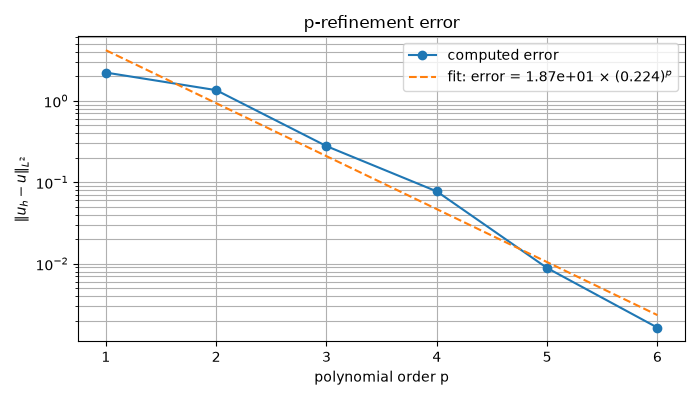
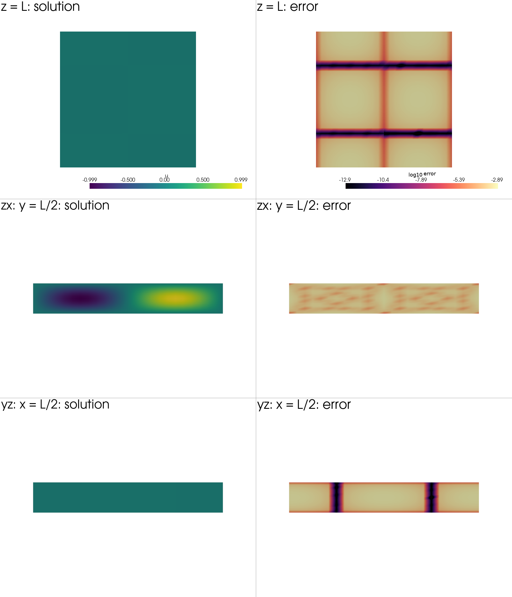

Note
Go to the end to download the full example code.
Mixed Poisson with periodic flux and weak Dirichlet boundaries#
This example solves a manufactured mixed Poisson problem on a small \(A \times B \times C\) grid of hexahedra. The coordinate map is affine in this first version, which keeps the focus on the boundary-condition API.
The mixed variables are the flux/gradient \(q = \star\mathrm{d}u\) and the solution \(u\). Flux traces are continuous across interior faces and are identified periodically on the \(x\) and \(y\) sides. The two \(z\) sides use the natural mixed boundary term for the weak Dirichlet condition \(u=0\).
The polynomial order is increased in a p-refinement sweep through p=6.
The example prints the error and fits the model
error = k0 * k1**p in log space. The highest-order solution is then used
to build high-order VTK Lagrange hexahedra. Three plane cuts show both the
solution and \(\log_{10}(\lvert u-u_h\rvert)\) on a z wall and on the zx
and yz interior planes.
The periodic rows are assembled with BoundaryPairGroup. A group takes
ordered lower and upper face collections, so the correspondence between
periodic patches is explicit even though the topological mesh has no physical
coordinates. The same global constraint call adds ordinary interior
continuity and the periodic flux rows.
from __future__ import annotations
from itertools import product
from math import pi
import matplotlib.pyplot as plt
import numpy as np
import numpy.typing as npt
import pyvista as pv
import scipy.sparse
import scipy.sparse.linalg
from fdg import (
BasisSpecs,
BasisType,
BoundaryPairGroup,
CoordinateMap,
DegreesOfFreedom,
FunctionSpace,
IntegrationMethod,
IntegrationSpace,
IntegrationSpecs,
KFormSpecs,
Mesh,
SpaceMap,
compute_kform_boundary_load,
compute_kform_mass_matrix,
incidence_kform_operator,
projection_kform_l2_dual,
transform_kform_to_target,
)
from fdg.degrees_of_freedom import reconstruct
from fdg.visualization import lagrange_quadrilateral_grid
NDIM = 3
CELLS = (2, 2, 1)
LENGTHS = np.asarray((2.0 * pi, 2.0 * pi, 1.0))
INTEGRATION_ORDER = 4
ORDERS = (1, 2, 3, 4, 5, 6)
VISUAL_ORDER = 12
PackedRows = tuple[
npt.NDArray[np.uintp],
npt.NDArray[np.uint64],
npt.NDArray[np.uint32],
npt.NDArray[np.uintp],
npt.NDArray[np.double],
]
Manufactured periodic problem#
The n-form coefficient u is manufactured as a scalar function. It is
periodic in x and y, while its trace is zero on both z walls. In the mixed
convention used here, q = star(d u) and d q = Delta(u). Thus the
source below is the Laplacian of the manufactured solution. The homogeneous
z datum is applied through the natural weak Dirichlet load in the momentum
equation; only q receives strong trace rows.
def manufactured_solution(
x: npt.NDArray[np.double],
y: npt.NDArray[np.double],
z: npt.NDArray[np.double],
) -> npt.NDArray[np.double]:
"""Return a function periodic in x and y and zero on both z sides."""
return np.sin(x) * np.cos(y) * np.sin(pi * z)
def manufactured_source(
x: npt.NDArray[np.double],
y: npt.NDArray[np.double],
z: npt.NDArray[np.double],
) -> npt.NDArray[np.double]:
"""Return the source d star d u = Delta(u) in the library convention."""
return -(2.0 + pi**2) * manufactured_solution(x, y, z)
def zero_dirichlet(
x: npt.NDArray[np.double],
y: npt.NDArray[np.double],
z: npt.NDArray[np.double],
) -> npt.NDArray[np.double]:
"""Return the homogeneous weak Dirichlet datum."""
del y, z
return np.zeros_like(x)
Topological mesh#
Mesh stores connectivity, not coordinates. Build one point lattice and
reuse each lattice point ID in every cell that touches it. The element order
here is also the order used later for the per-element maps and coefficients.
def element_indices() -> list[tuple[int, ...]]:
"""Return element indices in the same order used by ``mesh_corners``."""
return list(product(*(range(count) for count in CELLS)))
def grid_point(index: tuple[int, ...]) -> int:
"""Return the point ID in the structured topological grid."""
strides = (1, CELLS[0] + 1, (CELLS[0] + 1) * (CELLS[1] + 1))
return sum(axis_index * stride for axis_index, stride in zip(index, strides))
def mesh_corners() -> npt.NDArray[np.uint64]:
"""Return corner IDs for the structured A-by-B-by-C mesh."""
corners: list[int] = []
for element_index in element_indices():
for local_corner in range(2**NDIM):
corners.append(
grid_point(
tuple(
element_index[axis] + ((local_corner >> axis) & 1)
for axis in range(NDIM)
)
)
)
return np.asarray(corners, dtype=np.uint64)
Physical element maps#
A SpaceMap is needed for every element. The affine map below sends the
reference cube to its physical cell. For a deformed periodic domain, replace
these coordinate DoFs with matching restrictions of one global map: the
x-minus/x-plus and y-minus/y-plus boundary patches must then agree.
def make_element_maps(integration: IntegrationSpace) -> list[SpaceMap]:
"""Create affine maps from reference cells to the physical domain."""
geometry_space = FunctionSpace(
*(BasisSpecs(BasisType.LAGRANGE_UNIFORM, 1) for _ in range(NDIM))
)
local_nodes = np.meshgrid(*([np.asarray((-1.0, 1.0))] * NDIM), indexing="ij")
maps: list[SpaceMap] = []
for index in element_indices():
lower = LENGTHS * np.asarray(index) / np.asarray(CELLS)
widths = LENGTHS / np.asarray(CELLS)
coordinates = [
lower[axis] + 0.5 * widths[axis] * (local_nodes[axis] + 1.0)
for axis in range(NDIM)
]
maps.append(
SpaceMap(
*(
CoordinateMap(
DegreesOfFreedom(geometry_space, coordinate.ravel()),
integration,
)
for coordinate in coordinates
)
)
)
return maps
Periodic boundary patch matching#
The topology is not made periodic by merging its boundary faces. Instead,
collect corresponding x and y patches and pass them as explicit
BoundaryPairGroup objects. Sorting by the remaining element indices makes
the patch correspondence deterministic. axis_map=(1, 2) preserves the
canonical tangential coordinates on each pair.
def boundary_faces(
mesh: Mesh, indices: list[tuple[int, ...]]
) -> tuple[list[BoundaryPairGroup], list[tuple[int, int, int]]]:
"""Pair x/y faces and return z faces as ``(face, element, side)`` records."""
classified: dict[tuple[int, int], list[tuple[tuple[int, ...], int]]] = {}
z_faces: list[tuple[int, int, int]] = []
for _, object_id, element_ids, orientations in mesh.iterate_boundary(NDIM - 1):
signed_axis = int(orientations[0, 0])
axis = abs(signed_axis) - 1
side = -1 if signed_axis < 0 else 1
element_id = int(element_ids[0])
if axis == 2:
z_faces.append((int(object_id), element_id, side))
continue
tangential_index = tuple(
indices[element_id][other_axis]
for other_axis in range(NDIM)
if other_axis != axis
)
classified.setdefault((axis, side), []).append((tangential_index, int(object_id)))
def ordered(axis: int, side: int) -> tuple[int, ...]:
return tuple(object_id for _, object_id in sorted(classified[(axis, side)]))
periodic = [
BoundaryPairGroup(ordered(0, -1), ordered(0, 1), (1, 2)),
BoundaryPairGroup(ordered(1, -1), ordered(1, 1), (1, 2)),
]
return periodic, sorted(z_faces, key=lambda record: (record[2], record[1]))
Explicit flux trace tests#
The periodic constraints act on the 2-form flux q. A face is
two-dimensional, so its trace test has one 2-form component. The same
KFormSpecs is installed for every face; empty lower-dimensional entries
are valid because this example only needs face flux continuity.
def make_flux_test_specs(
mesh: Mesh, order: int
) -> tuple[KFormSpecs, list[list[list[KFormSpecs]]]]:
"""Create one explicit face test space for the 2-form flux."""
face_test_space = FunctionSpace(
*(BasisSpecs(BasisType.LEGENDRE, order) for _ in range(NDIM - 1))
)
face_test = KFormSpecs(NDIM - 1, face_test_space)
object_counts = (
mesh.point_count,
int(mesh.collections[0].shape[0]),
int(mesh.collections[1].shape[0]),
)
test_specs: list[list[list[KFormSpecs]]] = [
[[] for _ in range(count)] for count in object_counts
]
test_specs[NDIM - 1] = [[face_test] for _ in range(object_counts[NDIM - 1])]
return face_test, test_specs
Pack the global trace rows#
The mesh method returns row offsets plus element/component/DoF entries. The small adapter below turns that representation into a sparse matrix whose columns contain all element-local flux DoFs in element-major order.
def packed_to_sparse(
packed: PackedRows, specs_q: KFormSpecs, element_count: int
) -> scipy.sparse.csr_matrix:
"""Materialize global packed rows as a sparse flux operator."""
row_offsets, element_ids, components, local_dofs, coefficients = packed
n_rows = row_offsets.size - 1
nq = int(np.sum(specs_q.component_dof_counts))
component_offsets = np.asarray(
[
int(specs_q.get_component_slice(c).start)
for c in range(specs_q.component_count)
],
dtype=np.uintp,
)
element_offsets = np.arange(element_count, dtype=np.uintp) * nq
columns = element_offsets[element_ids] + component_offsets[components] + local_dofs
row_indices = np.repeat(
np.arange(n_rows, dtype=np.intp),
np.diff(row_offsets).astype(np.intp, copy=False),
)
return scipy.sparse.coo_matrix(
(coefficients, (row_indices, columns)),
shape=(n_rows, element_count * nq),
).tocsr()
Assemble the mixed system#
For each element, the mixed block has the form
[[M_q, E.T], [E, 0]]. The global matrix is block diagonal until the
packed q-trace rows are appended as Lagrange-multiplier equations. Weak
Dirichlet data enter the q right-hand side through the boundary load.
def solve(
mesh: Mesh,
maps: list[SpaceMap],
specs_q: KFormSpecs,
specs_u: KFormSpecs,
face_test: KFormSpecs,
test_specs: list[list[list[KFormSpecs]]],
periodic: list[BoundaryPairGroup],
z_faces: list[tuple[int, int, int]],
) -> tuple[list[np.ndarray], list[np.ndarray], float, float]:
"""Assemble and solve the mixed system with periodic flux rows."""
element_count = mesh.element_count
nq = int(np.sum(specs_q.component_dof_counts))
nu = int(np.sum(specs_u.component_dof_counts))
q_total = element_count * nq
u_total = element_count * nu
q_masses: list[np.ndarray] = []
derivatives: list[np.ndarray] = []
derivative_transposes: list[np.ndarray] = []
rhs_q = np.zeros(q_total)
rhs_u = np.zeros(u_total)
for element_id, element_map in enumerate(maps):
q_mass = np.asarray(
compute_kform_mass_matrix(
element_map, specs_q.order, specs_q.base_space, specs_q.base_space
)
)
u_mass = np.asarray(
compute_kform_mass_matrix(
element_map, specs_u.order, specs_u.base_space, specs_u.base_space
)
)
q_masses.append(q_mass)
derivatives.append(
np.asarray(incidence_kform_operator(specs_q, u_mass, right=True))
)
derivative_transposes.append(
np.asarray(incidence_kform_operator(specs_q, u_mass, transpose=True))
)
rhs_u[element_id * nu : (element_id + 1) * nu] = np.asarray(
projection_kform_l2_dual([manufactured_source], specs_u, element_map)[0]
).reshape(-1)
# u=0 on z=0 and z=L is a weak Dirichlet condition. The datum is zero,
# but the call is retained to show the natural mixed boundary interface.
for face_id, element_id, _ in z_faces:
rhs_q[element_id * nq : (element_id + 1) * nq] += compute_kform_boundary_load(
face_test,
specs_q,
maps[element_id],
mesh.collections,
mesh.point_count,
element_id,
face_id,
[zero_dirichlet],
)
q_mass_global = scipy.sparse.block_diag(
[scipy.sparse.csc_matrix(block) for block in q_masses], format="csc"
)
derivative_global = scipy.sparse.block_diag(
[scipy.sparse.csc_matrix(block) for block in derivatives], format="csc"
)
derivative_transpose_global = scipy.sparse.block_diag(
[scipy.sparse.csc_matrix(block) for block in derivative_transposes],
format="csc",
)
zero_u = scipy.sparse.csc_matrix((u_total, u_total))
mixed = scipy.sparse.bmat(
[
[q_mass_global, derivative_transpose_global],
[derivative_global, zero_u],
],
format="csc",
)
packed, constraint_rhs = mesh.compute_kform_global_constraints(
[specs_q] * element_count,
maps,
test_specs,
None,
periodic,
)
constraints = packed_to_sparse(packed, specs_q, element_count)
zero_constraints = scipy.sparse.csc_matrix(
(
constraints.shape[0],
constraints.shape[0],
)
)
constraint_operator = scipy.sparse.hstack(
[constraints, scipy.sparse.csc_matrix((constraints.shape[0], u_total))],
format="csc",
)
saddle = scipy.sparse.bmat(
[[mixed, constraint_operator.T], [constraint_operator, zero_constraints]],
format="csc",
)
rhs = np.concatenate((rhs_q, rhs_u, constraint_rhs))
solution = scipy.sparse.linalg.splu(saddle).solve(rhs)
q_values = solution[:q_total]
u_values = solution[q_total : q_total + u_total]
constraint_residual = float(
np.max(np.abs(constraints @ q_values - constraint_rhs), initial=0.0)
)
error_squared = 0.0
q_dofs: list[np.ndarray] = []
u_dofs: list[np.ndarray] = []
for element_id, element_map in enumerate(maps):
q_dofs.append(q_values[element_id * nq : (element_id + 1) * nq])
u_element = u_values[element_id * nu : (element_id + 1) * nu]
u_dofs.append(u_element)
u_component = DegreesOfFreedom(specs_u.get_component_function_space(0), u_element)
reference_values = u_component.reconstruct_at_integration_points(
element_map.integration_space
)
physical_values = transform_kform_to_target(
specs_u.order, element_map, [reference_values]
)[0]
coordinates = [element_map.coordinate_map(axis).values for axis in range(NDIM)]
error_squared += np.sum(
(physical_values - manufactured_solution(*coordinates)) ** 2
* np.abs(element_map.determinant)
* element_map.integration_space.weights()
)
return q_dofs, u_dofs, constraint_residual, float(np.sqrt(error_squared))
p-refinement#
The same mesh and boundary specification are solved at several polynomial
orders. The error is fit by least squares in log space to
error = k0 * k1**p.
def solve_order(
mesh: Mesh,
periodic: list[BoundaryPairGroup],
z_faces: list[tuple[int, int, int]],
order: int,
) -> tuple[list[SpaceMap], KFormSpecs, list[np.ndarray], float, float]:
"""Build and solve one polynomial order of the periodic problem."""
integration_order = max(INTEGRATION_ORDER, order + 4)
integration = IntegrationSpace(
*(
IntegrationSpecs(integration_order, IntegrationMethod.GAUSS)
for _ in range(NDIM)
)
)
maps = make_element_maps(integration)
base_space = FunctionSpace(
*(BasisSpecs(BasisType.BERNSTEIN, order) for _ in range(NDIM))
)
specs_q = KFormSpecs(NDIM - 1, base_space)
specs_u = KFormSpecs(NDIM, base_space)
face_test, test_specs = make_flux_test_specs(mesh, order)
q_dofs, u_dofs, constraint_residual, error = solve(
mesh,
maps,
specs_q,
specs_u,
face_test,
test_specs,
periodic,
z_faces,
)
return maps, specs_u, u_dofs, constraint_residual, error
def plot_convergence(orders: tuple[int, ...], errors: list[float]) -> tuple[float, float]:
"""Plot errors and a least-squares exponential p-refinement fit."""
order_values = np.asarray(orders, dtype=float)
error_values = np.asarray(errors)
log_k1, log_k0 = np.polyfit(order_values, np.log(error_values), 1)
k0 = float(np.exp(log_k0))
k1 = float(np.exp(log_k1))
fitted = k0 * k1**order_values
figure, axis = plt.subplots(figsize=(7, 4))
axis.semilogy(order_values, error_values, marker="o", label="computed error")
axis.semilogy(
order_values,
fitted,
linestyle="--",
label=rf"fit: error = {k0:.2e} $\times$ ({k1:.3f})$^p$",
)
axis.set(
xlabel="polynomial order p",
ylabel=r"$\|u_h-u\|_{L^2}$",
title="p-refinement error",
)
axis.grid(True, which="both")
axis.legend()
figure.tight_layout()
return k0, k1
High-order VTK cells and slices#
A three-dimensional VTK slice can reconnect the high-order face points as large linear polygons. To keep the visualization faithful, construct each requested cut directly as a collection of high-order Lagrange quadrilaterals. The finite-element solution is evaluated on the two-dimensional reference cells, while the affine n-form map supplies the physical density.
def make_plane_map(
element_index: tuple[int, ...],
fixed_axis: int,
fixed_coordinate: float,
varying_axes: tuple[int, int],
integration: IntegrationSpace,
) -> SpaceMap:
"""Create a 2D-to-3D affine map for one coordinate-plane cell."""
geometry_space = FunctionSpace(
*(BasisSpecs(BasisType.LAGRANGE_UNIFORM, 1) for _ in range(2))
)
nodes = np.meshgrid(*([np.asarray((-1.0, 1.0))] * 2), indexing="ij")
lower = LENGTHS * np.asarray(element_index) / np.asarray(CELLS)
widths = LENGTHS / np.asarray(CELLS)
coordinates = []
for physical_axis in range(NDIM):
if physical_axis == fixed_axis:
coordinates.append(np.full_like(nodes[0], fixed_coordinate))
else:
local_axis = varying_axes.index(physical_axis)
coordinates.append(
lower[physical_axis]
+ 0.5 * widths[physical_axis] * (nodes[local_axis] + 1.0)
)
return SpaceMap(
*(
CoordinateMap(
DegreesOfFreedom(geometry_space, coordinate.ravel()), integration
)
for coordinate in coordinates
)
)
def make_plane_grid(
maps: list[SpaceMap],
specs_u: KFormSpecs,
u_dofs: list[np.ndarray],
fixed_axis: int,
fixed_coordinate: float,
varying_axes: tuple[int, int],
) -> pv.UnstructuredGrid:
"""Build one direct high-order VTK quadrilateral plane cut."""
nodes = np.linspace(-1.0, 1.0, VISUAL_ORDER + 1)
plane_nodes = np.meshgrid(nodes, nodes, indexing="ij")
plane_integration = IntegrationSpace(IntegrationSpecs(2), IntegrationSpecs(2))
fixed_cell = min(
int(fixed_coordinate / LENGTHS[fixed_axis] * CELLS[fixed_axis]),
CELLS[fixed_axis] - 1,
)
selected = [
(element_id, element_index)
for element_id, element_index in enumerate(element_indices())
if element_index[fixed_axis] == fixed_cell
]
plane_maps: list[SpaceMap] = []
solution_samples: list[np.ndarray] = []
error_samples: list[np.ndarray] = []
for element_id, element_index in selected:
lower = LENGTHS * np.asarray(element_index) / np.asarray(CELLS)
widths = LENGTHS / np.asarray(CELLS)
fixed_reference = (
2.0 * (fixed_coordinate - lower[fixed_axis]) / widths[fixed_axis] - 1.0
)
reference_coordinates = [
np.full_like(plane_nodes[0], fixed_reference) for _ in range(NDIM)
]
for local_axis, physical_axis in enumerate(varying_axes):
reference_coordinates[physical_axis] = plane_nodes[local_axis]
u_component = DegreesOfFreedom(
specs_u.get_component_function_space(0), u_dofs[element_id]
)
reference_values = np.asarray(reconstruct(u_component, *reference_coordinates))
physical_values = reference_values / float(np.mean(maps[element_id].determinant))
coordinates = [
(
np.full_like(plane_nodes[0], fixed_coordinate)
if physical_axis == fixed_axis
else lower[physical_axis]
+ 0.5
* widths[physical_axis]
* (plane_nodes[varying_axes.index(physical_axis)] + 1.0)
)
for physical_axis in range(NDIM)
]
signed_error = physical_values - manufactured_solution(*coordinates)
plane_maps.append(
make_plane_map(
element_index,
fixed_axis,
fixed_coordinate,
varying_axes,
plane_integration,
)
)
solution_samples.append(physical_values)
error_samples.append(
np.log10(np.maximum(np.abs(signed_error), np.finfo(float).tiny)) # type: ignore
)
return lagrange_quadrilateral_grid(
plane_maps,
VISUAL_ORDER,
{"u": solution_samples, "log10_abs_error": error_samples},
)
def make_plane_grids(
maps: list[SpaceMap], specs_u: KFormSpecs, u_dofs: list[np.ndarray]
) -> tuple[list[tuple[str, pv.UnstructuredGrid]], tuple[float, float]]:
"""Build the z-wall, zx, and yz high-order quadrilateral cuts."""
slice_offset = 1.0e-8
planes = (
("z = L", 2, float(LENGTHS[2] - slice_offset), (0, 1)),
("zx: y = L/2", 1, float(LENGTHS[1] / 2.0 + slice_offset), (0, 2)),
("yz: x = L/2", 0, float(LENGTHS[0] / 2.0 + slice_offset), (1, 2)),
)
grids = [
(
title,
make_plane_grid(
maps, specs_u, u_dofs, fixed_axis, fixed_coordinate, varying_axes
),
)
for title, fixed_axis, fixed_coordinate, varying_axes in planes
]
finite_error = np.concatenate(
[np.asarray(grid.point_data["log10_abs_error"]) for _, grid in grids]
)
error_high = float(np.max(finite_error))
error_low = max(error_high - 10.0, float(np.min(finite_error)))
return grids, (error_low, error_high)
def plot_slices(
planes: list[tuple[str, pv.UnstructuredGrid]],
error_clim: tuple[float, float],
) -> None:
"""Plot direct high-order cuts of the solution and its logarithmic error."""
off_screen = "agg" in plt.get_backend().lower()
plotter = pv.Plotter(shape=(3, 2), window_size=(1800, 2100), off_screen=off_screen)
views = (plotter.view_xy, plotter.view_xz, plotter.view_yz)
for row, (title, grid) in enumerate(planes):
solution_name = f"u_{row}"
error_name = f"log10_abs_error_{row}"
grid.point_data[solution_name] = np.asarray(grid.point_data["u"])
grid.point_data[error_name] = np.asarray(grid.point_data["log10_abs_error"])
solution_limit = max(
float(np.max(np.abs(grid.point_data[solution_name]))), 1.0e-14
)
plotter.subplot(row, 0)
plotter.add_mesh(
grid,
scalars=solution_name,
cmap="viridis",
clim=(-solution_limit, solution_limit),
scalar_bar_args={"title": "u"},
)
plotter.add_text(f"{title}: solution")
views[row]()
plotter.subplot(row, 1)
plotter.add_mesh(
grid,
scalars=error_name,
cmap="magma",
clim=error_clim,
scalar_bar_args={"title": "log10 |error|"},
)
plotter.add_text(f"{title}: error")
views[row]()
plotter.show()
mesh = Mesh.from_corners(NDIM, mesh_corners())
periodic, z_faces = boundary_faces(mesh, element_indices())
errors: list[float] = []
final_maps: list[SpaceMap] | None = None
final_specs_u: KFormSpecs | None = None
final_u_dofs: list[np.ndarray] | None = None
print(f"{CELLS[0]}x{CELLS[1]}x{CELLS[2]} cells:", flush=True)
for order in ORDERS:
maps, specs_u, u_dofs, constraint_residual, error = solve_order(
mesh, periodic, z_faces, order
)
errors.append(error)
final_maps = maps
final_specs_u = specs_u
final_u_dofs = u_dofs
print(
f" p={order}: q residual={constraint_residual:.3e}, L2 error={error:.6e}",
flush=True,
)
fit_k0, fit_k1 = plot_convergence(ORDERS, errors)
print(f"fit: error = {fit_k0:.6e} * ({fit_k1:.6f})**p", flush=True)
assert final_maps is not None
assert final_specs_u is not None
assert final_u_dofs is not None
planes, error_clim = make_plane_grids(final_maps, final_specs_u, final_u_dofs)
plot_slices(planes, error_clim)
if "agg" not in plt.get_backend().lower():
plt.show()


2x2x1 cells:
p=1: q residual=3.944e-31, L2 error=2.221441e+00
p=2: q residual=3.886e-16, L2 error=1.351772e+00
p=3: q residual=2.910e-16, L2 error=2.778543e-01
p=4: q residual=4.215e-16, L2 error=7.724771e-02
p=5: q residual=4.299e-16, L2 error=8.867408e-03
p=6: q residual=3.237e-16, L2 error=1.645072e-03
fit: error = 1.867614e+01 * (0.223762)**p
Total running time of the script: (0 minutes 5.279 seconds)